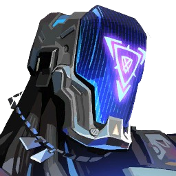
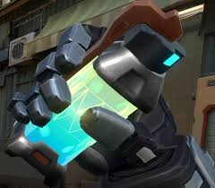
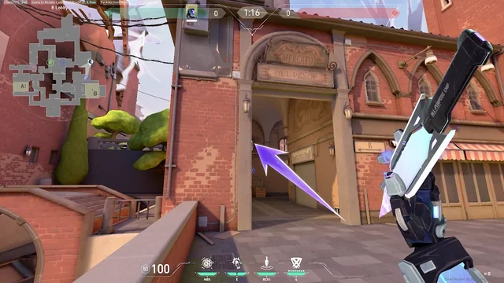
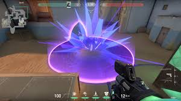

KAY/O
Função: Iniciador
Biografia: KAY/O é uma máquina de guerra construída com um único propósito: neutralizar Radiantes. Seu poder de suprimir habilidades inimigas desequilibra o campo de batalha e dá a sua equipe a vantagem tática necessária.
HABILIDADES DE COMBATE
GRANADA/CLARÃO
Q - Lança uma granada que explode e cega todos os inimigos na área.
PONTO/ZERO
E - Uma lâmina que suprime inimigos atingidos, impedindo uso de habilidades.
FRAG/MENTO
C - Lança um explosivo que causa dano pesado no centro da explosão.
ANULAR/CMD

X - Libera um pulso de energia que suprime inimigos em grande raio. Se morto, pode ser reativado por aliados.
DADOS DE SUPRESSÃO
| HABILIDADE | DURAÇÃO | RAIO | RECARGA |
|---|---|---|---|
| PONTO/ZERO | 4s | 8m | 40s |
| ANULAR/CMD | 8s | 15m | 8pts |
TÁTICAS DE SUPRESSÃO
- Use PONTO/ZERO para iniciar confrontos importantes
- ANULAR/CMD pode virar rounds quando usado em pushes
- FRAG/MENTO é letal contra inimigos em cantos
- Combine GRANADA/CLARÃO com pushes da equipe
- Como robô, você não é afetado por flashes aliados